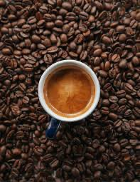
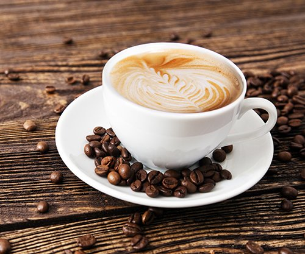
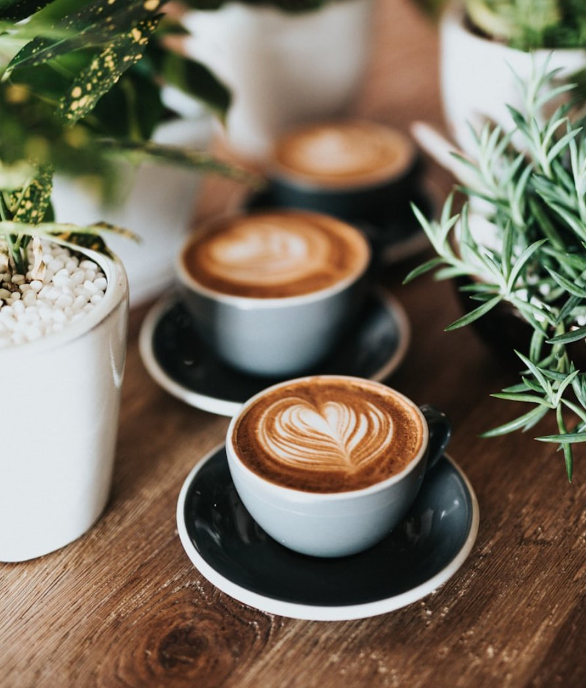

Espresso Forge
₡2,500Concentrado intenso con notas de chocolate y caramelo.
Seleccionamos, tostamos y servimos café de especialidad directamente de origen.
Ver Menú
CafeForge nació de una obsesión: encontrar el café perfecto. Trabajamos directamente con agricultores de Costa Rica, Etiopía y Colombia.
Cada lote se tuesta a mano, controlando temperatura y tiempo para resaltar los sabores únicos de cada origen.
Visitamos fincas y cooperativas para elegir los mejores lotes de cada cosecha.
Tostamos en pequeños lotes con temperatura controlada para cada perfil de sabor.
Cada lote pasa por una cata técnica antes de llegar a tu taza.
Nuestros baristas certificados preparan cada bebida con técnica y precisión.
